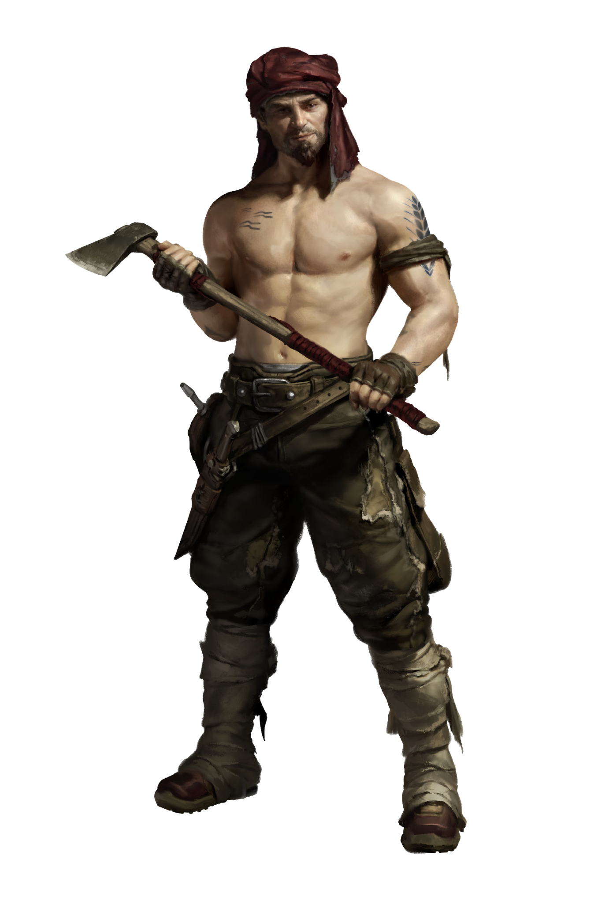

CLAN DOSSIER
Providers
The Rubble is growing together, developing an identity of its own.
Clans of the Moloch pp. 17–19

REFORMED IDENTITY
Briefing
Sweat pools on the brows of the two contenders. Ingram locks eyes with his rival Jericho, both trying to intimidate the other before the match even begins. “You got this, Ingram!” voices yell. The men grasp each other’s hand, as they get into position.
“Three! Two! One! Go!” Veins pop, forearms swell, and knuckles turn pale. The crowd at the pipeline breaks out in cheers, rooting for Ingram, their boy, toughened by years of toiling through Borcan soil. But Jericho holds out on his own, arms tempered from swinging his unwieldy Judgement Hammer in combat. The men grunt, spit, foaming from their mouths, neither willing to give an inch. The midday sun parches the opponents. “Not this time!” Ingram wheezes, and leans his massive frame forward like a bull on the attack, bending Jericho’s wrist out of position and slamming the Judge’s arm onto the table. A sudden jerk goes through the assembly, everyone screaming “Our kid!” at the top of their lungs. In the background, Jericho mounts his horse, salty and vexed, humiliated by a wretched Provider, out in the Rubble. At least nobody in his squad will know about it…
Reformed Identity
There’s always those at the bottom and those at the top. The problem is, those at the top can only remain there, if those at the bottom keep feeding them. Farmer’s logic, but that’s how empires grow. Justitian demands a tremendous amount of food, and the Providers in the Rubble are the only ones able to supply enough to keep the city stocked, and its populace fat and healthy.
However, this form of coexistence is not based on altruism, but on force. Some five generations ago the Providers were violently resettled into the Rubble, placed here by the new rising power of the Black Lung, the Judiciary itself. This process uprooted them from their origins, casting these families into a cultural twilight, in which they had to renounce their past, and pledge allegiance to rules and regulations imposed upon them by Uptown. The motivation for this was deliberate: farmers and feeders who can’t cling to shared traditions are weak, easily intimidated, and can be suppressed at a moments notice.
But those days are over. Providers now gather in family units, each farm managed by a small collection of workers related by blood, and the parcels themselves have merged into tiny villages ruled over by Patriarchs. Information travels between the villages, and in turn the families draw strength from each other, willing to lend aid to their relatives in times of need. The Rubble is growing together, developing an identity of its own, one that is growing to stand united in the face of adversity and oppression.
Common Ground
The Judges abuse them, the Spitalians harass them, and the regular citizens pay no attention to them. It would appear that everyone is hostile towards the Providers. However, there is one group that is resolutely on their side, working shoulder to shoulder in the fields outside of Justitian - the Ascetics.
Ever since the Anabaptists began settling the Rubble, the two farming communities have shared common ground, joining together to exchange cultivation methods and techniques. Even their religions have begun to blend together; Providers are now getting inked with three-dot tattoos and pierced with nose rings, while Ascetics marry off their daughters to longstanding Patriarch families.
Teenage Rebellion
The life of a Provider is a hard one, year after year of backbreaking work just to scrape out a meager existence. It’s no wonder, then, that the Provider families have been hemorrhaging their youth to the Cults, the teenagers pulled away with the promise of a new, better existence. The situation is slowly getting worse, as an entire generation is deviating from its Clan’s path. The Patriarchs look at their descendants in confusion and worry - what happens if there’s no one to inherit what they’ve erected in years past?
Alternative Jobs
Some Providers have allied themselves with the Spitalians and become seed testers, lending out their parcels for the doctors to test new and experimental farming methods, fertilizers, fungicides and more. If the tests are successful and their harvest is good, they get paid for their crops - more than they would for a normal year. If their plants wither and die in an unexpected reaction? They get paid anyway, courtesy of the Spital. Additionally, they are given an automatic certification when the time comes to sell their goods, due to the constant Spitalian supervision they’re subjected to.
THE CLAN
Hierarchy & Ranks
Select any rank to read its prerequisites, effect, and equipment.
THE CLAN